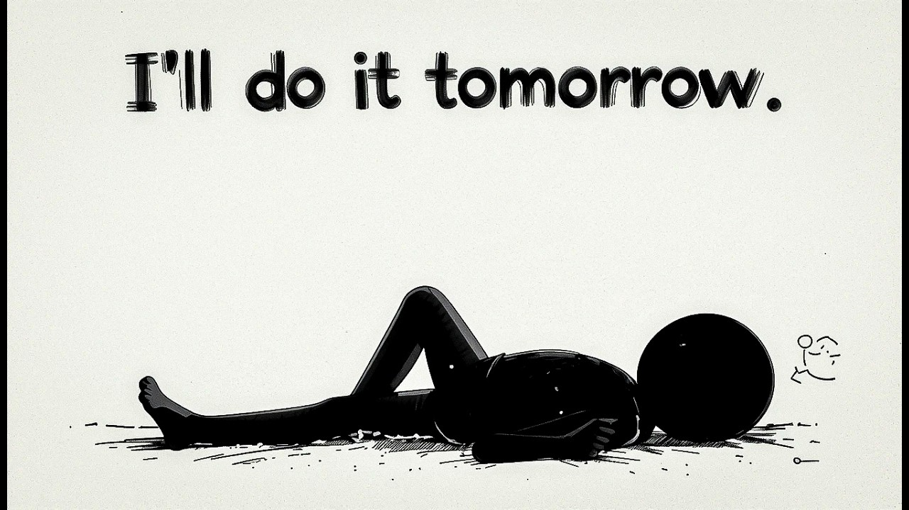

【如果你有野心但很懒，请看看这个视频...】
Summary: This video explains why laziness happens and offers three simple steps to overcome it: make tasks small, create easy routines, and use the 2-minute rule to start. Small, consistent efforts lead to big results over time.
摘要： 本视频解释了懒惰的原因，并提供了三个简单步骤来克服它：将任务拆小、建立简单习惯、用2分钟规则开始行动。小而持续的努力会带来巨大的改变。

⏱️ Estimated Reading Time: 6 min
Ever feel like you have big dreams but no energy to make them happen.
你是否曾有大梦想，却缺乏实现的动力。
You think I'll do it tomorrow but tomorrow never comes.
你想着“明天再做”，但明天永远不会来。
You want to do great things but it feels so hard to even start.
你想做大事，却连开始都觉得困难。
You think about writing a book getting fit or learning something new but instead you scroll on your phone or watch TV.
你想过写书、健身或学新技能，却刷手机或看电视。
Why does this happen.
为什么会这样？
It's not because you're lazy forever it's because the tasks feel too big.
不是因为你永远懒惰，而是任务看起来太大。
When something feels too hard your brain says let's do something easier.
当事情太难时，大脑会说“选个更简单的吧”。
But the good news you can fix this laziness isn't who you are it's just a habit and habits can change.
但好消息是，懒惰可以改变——它不是你的本质，只是习惯。
Think about how often you've been stuck because the goal felt impossible.
想想多少次因目标遥不可及而卡住。
You want to save money but the thought of cutting back on Everything feels like too much.
你想存钱，但想到削减所有开支就压力山大。
Or you want to get healthier but the idea of running every day seems exhausting.
或想变健康，但每天跑步的念头让人疲惫。
It's not that you don't care it's that your brain is wired to avoid pain and seek Comfort.
不是你不关心，而是大脑天生逃避痛苦、追求舒适。
But you can outsmart your brain.
但你可以智胜大脑。
Here are three simple steps to help you stop being lazy and start doing what matters.
三个简单步骤帮你停止懒惰，开始做重要的事。
Step one make it small big tasks feel scary so make them small.
第一步：拆小任务——大任务让人害怕，所以缩小它。
For example if you want to write a book don't think about writing 200 Pages just write one sentence today.
例如想写书，别想着写200页，今天只写一句。
Small steps are easier and make you feel good.
小步骤更简单且带来成就感。
Think of it like climbing a mountain you don't jump to the top you take one step then another.
像爬山一样——不直接登顶，而是一步步走。
Do the same with your goals small wins add up.
目标也如此，小胜利会累积。
Here's another example if you want to learn a new skill like playing guitar don't try to learn an entire song in one day just practice one chord.
再比如学吉他，别想一天学会整首歌，先练一个和弦。
Over time those small efforts turn into big results.
时间久了，小努力会变成大成果。
The key is to focus on progress not Perfection.
关键是专注进步，而非完美。
Step two create easy routines don't rely on Willpower.
第二步：建立简单习惯——别依赖意志力。
Set up routines willpower runs out but routines make things automatic.
习惯让事情自动化，意志力却会耗尽。
For example if you want to exercise put your shoes by your bed.
例如想锻炼，把鞋放床边。
That way when you wake up it's easy to get started.
这样醒来时更容易开始。
Think of routines like training wheels they make things easier until you can do them naturally.
习惯像辅助轮，帮你轻松上手直到自然掌握。
What's one small routine you can start today.
今天能建立什么小习惯？
Maybe it's writing a to-do list every morning or drinking a glass of water as soon as you wake up.
可以是每天写待办清单，或起床喝杯水。
These small habits create structure and help you build momentum.
小习惯构建框架，助你积累动力。
Step three use the 2-minute rule the hardest part is starting so promise yourself you'll work on something for Just 2 minutes that's it.
第三步：2分钟规则——最难的是开始，所以承诺只做2分钟。
Want to read a book read one page.
想读书？读一页。
Want to clean your room start with one corner.
想打扫房间？从一个角落开始。
Once you start it's easier to keep going.
一旦开始，继续会更容易。
It's like pushing a ball down a hill the first push is hard but after that it rolls on its own.
像推球下山——第一推费力，之后球自己滚动。
Here's a bonus tip reward yourself for starting after you've done your 2 minutes celebrate in a small way.
额外建议：奖励开始——完成2分钟后小小庆祝。
Maybe it's listening to your favorite song or taking a short break.
比如听喜欢的歌，或短暂休息。
Rewards make starting feel good and motivate you to keep going.
奖励让开始变得愉快，激励你继续。
Here's the truth everyone starts small.
真相是：所有人都从小事开始。
The people you admire they struggle too they kept going.
你敬佩的人也曾挣扎，但他们坚持了。
You don't have to be perfect you just have to start.
你不必完美，只需开始。
Think of your dreams like a fire right now it's a tiny spark.
把梦想视作火苗——现在只是小火花。
Every small action you take is like adding fuel.
每个小行动都是添柴。
Keep adding fuel and soon you'll have a roaring fire.
不断添柴，很快会有熊熊烈火。
So what will you do today to light that fire.
今天你要做什么来点燃它？
Remember it's okay to fail everyone fails.
记住：失败没关系，人人都会失败。
What matters is that you get back up and try again.
重要的是站起来再尝试。
Failure isn't the opposite of success it's part of the journey.
失败不是成功的反面，而是旅程的一部分。
So be kind to yourself and keep moving forward.
所以善待自己，继续前进。
Let's keep it simple if you're ambitious but lazy here's what to do.
简单总结：有野心但懒惰时这样做。
One make tasks small and easy.
一、让任务小而简单。
Two create routines to help you.
二、建立习惯辅助自己。
Three start with just 2 minutes of effort that's it.
三、从2分钟努力开始。
Don't wait for the perfect moment start now.
别等完美时刻，现在开始。
Pick one thing and take a small step today.
选一件事，今天迈出一小步。
Your dreams are waiting for you go make them happen.
梦想在等你，去实现吧。
And remember this you don't need to be perfect you just need to be consistent.
记住：无需完美，只需坚持。
Even small efforts done regularly can create massive change.
定期的小努力能带来巨大改变。
But you can't stay consistent without taking action.
但不行动就无法坚持。
So watch this to start taking action today.
所以观看本视频，今天就开始行动。